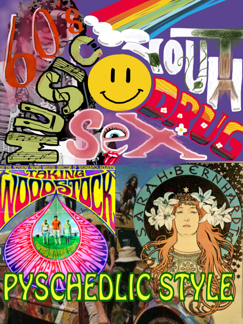
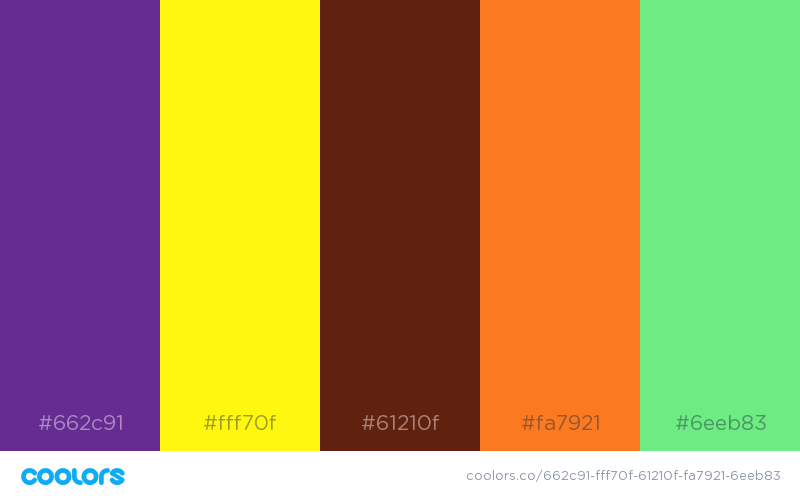
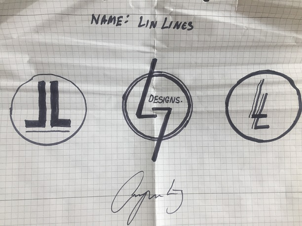
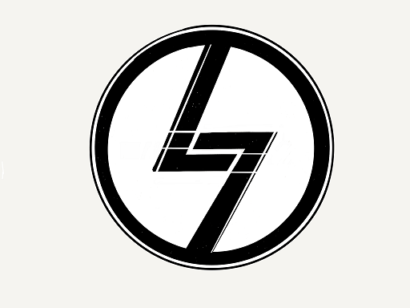
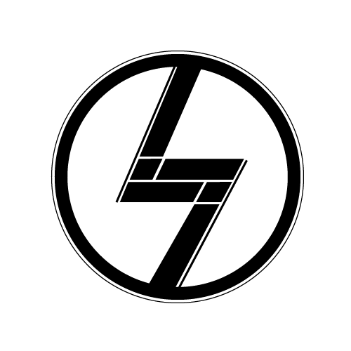
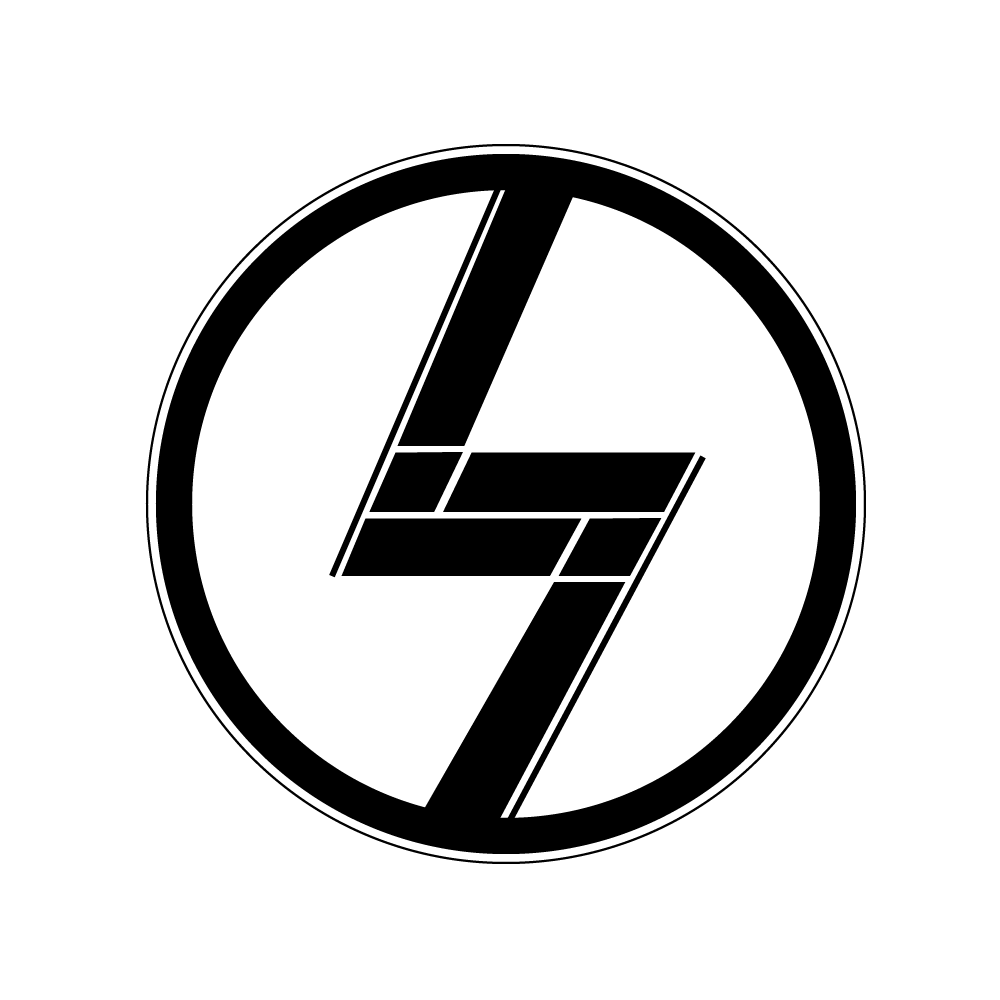

Pyschedelic Style.
 Typography.
The influence of drugs is clearly shown in the general style of typography and art, during the 60's and 70's.
It often features a very abstract look with uneven, wavy lines, a wide color spectrum and abnormal structure of letters and objects. The typeface is often very soft and solid, with large, and grotesque letters in different colors. It resembles the hallucinations one would experience under the influence of recreational drugs. The organic and untraditional typography emphasizes the hippie love for nature and free will.

Logo Development.
This is the very first draft for this website's logo.
The first piece of inspiration came from my own signature, which intertwines the initials L and J. I felt the middle sketch had most potential for interpreting. I drew a more detailed sketch on my tablet, so I was able to style it freely and precisely with my hands
I added two transparrent lines through the two L's, forming two i's. That way it spells "Li" in multiple dimensions. I tracked the sketch in Adobe Illustrator, and finalized the logo, with precise proportions. The background remains alpha channel, so it's compatible with positive and negative colors.
Example Of Image Assets.
Small. 16,2 KB, (250x250)
Medium 37 KB, (500x500)
Large 94,8 KB, (1000x1000)